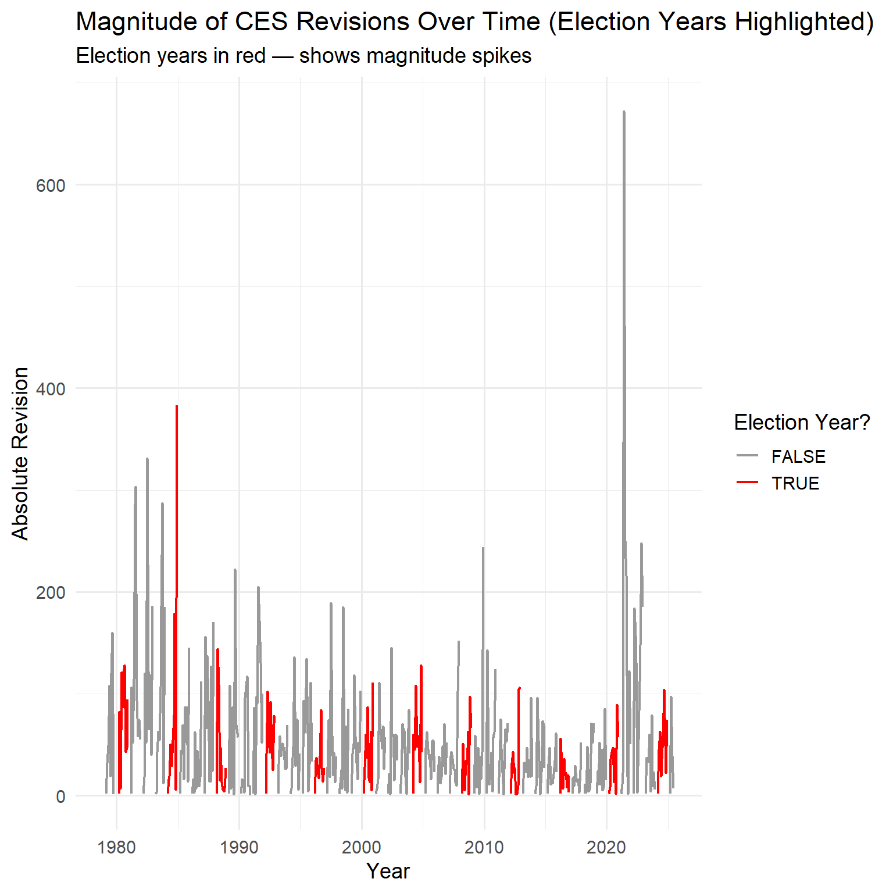

library(httr2)library(rvest)library(dplyr)library(tidyr)library(stringr)library(lubridate)# Step 1: Send POST request using httr2resp <- httr2::request("https://data.bls.gov/pdq/SurveyOutputServlet") |> httr2::req_method("POST") |> httr2::req_headers("Content-Type"="application/x-www-form-urlencoded","Origin"="https://data.bls.gov","Referer"="https://data.bls.gov/pdq/SurveyOutputServlet","User-Agent"="Mozilla/5.0" ) |> httr2::req_body_form(request_action ="get_data",reformat ="true",from_results_page ="true",from_year ="1979",to_year ="2025",initial_request ="false",data_tool ="surveymost",series_id ="CES0000000001",years_option ="specific_years" ) |> httr2::req_perform()# Step 2: Parse HTML and grab the correct (second) tablehtml <- httr2::resp_body_html(resp)tables <- html |> rvest::html_elements("table")# first table is metadata, second is Year/Jan...Decces_raw <- tables[[2]] |> rvest::html_table()# Step 3: Reshape Year/Jan...Dec into monthly date + levelces_levels <- ces_raw |> tidyr::pivot_longer(cols =-Year, # all columns except Yearnames_to ="month",values_to ="level" ) |> dplyr::mutate(ym_str =paste(Year, month), # "1979 Jan"date = lubridate::ym(ym_str), # 1979-01-01level =as.numeric(gsub(",", "", level)) ) |> dplyr::select(date, level) |> dplyr::arrange(date) |> dplyr::filter( date >=as.Date("1979-01-01"), date <=as.Date("2025-07-01") ) |> tidyr::drop_na()
Downloading CES Revisions
Code
# ============= PACKAGES =============library(httr2)library(rvest)library(dplyr)library(tidyr)library(purrr)library(stringr)library(tibble)# Avoid HTTP/2 issues some Windows setups have with BLSoptions(curl_http_version =2)# ============= 1. REQUEST PAGE WITH httr2 =============url_ces <-"https://www.bls.gov/web/empsit/cesnaicsrev.htm"req_ces <- httr2::request(url_ces) |> httr2::req_method("GET") |> httr2::req_headers("User-Agent"="Mozilla/5.0 (Windows NT 10.0; Win64; x64; rv:120.0) Gecko/20100101 Firefox/120.0","Accept"="text/html,application/xhtml+xml,application/xml;q=0.9,*/*;q=0.8","Accept-Language"="en-US,en;q=0.5","Referer"="https://www.bls.gov/","Connection"="keep-alive" ) |> httr2::req_options(http_version =2L) # HTTP/1.1resp_ces <- httr2::req_perform(req_ces)page_ces <- resp_ces |> httr2::resp_body_html()# ============= 2. FUNCTION FOR A SINGLE YEAR =============# Returns: date, original, final, revisionget_ces_revisions_year <-function(year, html_page = page_ces) { heading_pattern <-sprintf("Nonfarm Payroll Employment: Revisions between over-the-month estimates, %d", year )# All tables after the heading table_nodes <- html_page |> rvest::html_elements(xpath =sprintf("//*[contains(., '%s')][1]/following::table", heading_pattern) )if (length(table_nodes) ==0) {stop("No tables found for year ", year) }# Pick the first table with at least 12 rows tbl_raw <-NULLfor (node in table_nodes) { tmp <-suppressWarnings(rvest::html_table(node, header =FALSE, fill =TRUE))if (nrow(tmp) >=12) { tbl_raw <- tibble::as_tibble(tmp)break } }if (is.null(tbl_raw)) {stop("No suitable (>= 12 rows) table found for year ", year) }# Clean: first 12 rows = Jan–Dec tbl_clean <- tbl_raw |> dplyr::slice(1:12) |> dplyr::select(month =1, # not used for date, but this is month nameoriginal =3, # first estimatefinal =5# third estimate ) |> dplyr::mutate(# 1..12 as month indexmonth_index = dplyr::row_number(),# Build date as "YYYY-MM-01" using the year argumentdate =as.Date(sprintf("%d-%02d-01", year, month_index)),# Clean numeric text: keep only digits and minus signoriginal_str = stringr::str_replace_all(original, "[^0-9-]", ""),final_str = stringr::str_replace_all(final, "[^0-9-]", ""),# Convert to numeric with warnings suppressedoriginal =suppressWarnings(as.numeric(original_str)),final =suppressWarnings(as.numeric(final_str)),revision = final - original ) |> dplyr::select(date, original, final, revision) tbl_clean}# ============= 3. APPLY TO ALL YEARS 1979–2025 =============years_vec <-1979:2025ces_revisions_all <- purrr::map_dfr( years_vec, get_ces_revisions_year)# ============= 4. FILTER TO JAN 1979 – JUN 2025 =============ces_revisions <- ces_revisions_all |> dplyr::filter( date >=as.Date("1979-01-01"), date <=as.Date("2025-06-01") ) |> dplyr::arrange(date)
Direction of CES Payroll Revisions in Election Years
Year
Mean revision (jobs)
Median revision (jobs)
Most negative revision (jobs)
Most positive revision (jobs)
1980
19,100
22,500
-94,000
128,000
1984
23,900
9,000
-179,000
383,000
1988
-27,800
-6,500
-144,000
27,000
1992
16,100
33,000
-102,000
92,000
1996
15,000
15,500
-27,000
84,000
2000
36,700
27,000
-28,000
111,000
2004
21,800
22,000
-59,000
128,000
2008
7,500
1,500
-66,000
97,000
2012
25,000
6,000
-27,000
107,000
2016
-13,300
-13,500
-56,000
22,000
2020
4,500
2,000
-47,000
89,000
2024
-37,000
-40,500
-104,000
49,000
Code
library(ggplot2)ggplot(ces_full, aes(x = date, y = abs_revision,color = is_election_year)) +geom_line(linewidth =0.8) +scale_color_manual(values =c("FALSE"="gray60","TRUE"="red")) +labs(title ="Magnitude of CES Revisions Over Time (Election Years Highlighted)",subtitle ="Election years in red — shows magnitude spikes",x ="Year",y ="Absolute Revision",color ="Election Year?" ) +theme_minimal(base_size =14)

Code
ggplot(ces_full, aes(x = date, y = revision,color = is_election_year)) +geom_hline(yintercept =0, linetype ="dashed") +geom_line(linewidth =0.8) +scale_color_manual(values =c("FALSE"="gray60","TRUE"="blue")) +labs(title ="Signed CES Revisions (Election Years Highlighted)",subtitle ="Shows whether revisions trended upward or downward",x ="Year",y ="Revision",color ="Election Year?" ) +theme_minimal(base_size =14)
Code
library(dplyr)library(ggplot2)library(plotly)## 1. Election years + colors (your original palette)election_years <-c(1980, 1984, 1988, 1992, 1996, 2000,2004, 2008, 2012, 2016, 2020, 2024)election_colors <-c("1980"="#D11149","1984"="#0081A7","1988"="#F17105","1992"="#9A3DFF","1996"="#2EC4B6","2000"="#FFD23F","2004"="#A0522D","2008"="#1B4965","2012"="#FF6B6B","2016"="#4CAF50","2020"="#FB8500","2024"="#8E7DBE")## 2. Make sure the helper columns exist on ces_fullces_mag_plot <- ces_full |>mutate(abs_rev = abs_revision,is_election_year = year %in% election_years,election_factor =factor(year) )## 3. Build the ggplot version with THIN linesp_mag <-ggplot() +# grey background: all months, *very* thingeom_line(data = ces_mag_plot,aes(x = date, y = abs_rev),color ="grey70",linewidth =0.2, # thinner than beforealpha =0.7 ) +# election years: colored, still a bit thinner than the old plotgeom_line(data = ces_mag_plot |>filter(is_election_year),aes(x = date, y = abs_rev, color = election_factor),linewidth =0.8 ) +scale_color_manual(values = election_colors,name ="Election Year" ) +labs(title ="Magnitude of CES Revisions (Absolute Values)",subtitle ="Election years highlighted — grey background shows all months",x ="Year",y ="Absolute Revision" ) +theme_minimal(base_size =14) +theme(legend.position ="bottom",legend.title =element_text(size =12),legend.text =element_text(size =10) )## 4. Convert to interactive plotlyggplotly(p_mag)
Code
library(plotly)library(dplyr)library(ggplot2)library(lubridate)# Election years and colorselection_years <-c(1980, 1984, 1988, 1992, 1996, 2000,2004, 2008, 2012, 2016, 2020, 2024)election_colors <-c("1980"="#E63946","1984"="#1D3557","1988"="#F4A261","1992"="#2A9D8F","1996"="#A8DADC","2000"="#E9C46A","2004"="#264653","2008"="#9B5DE5","2012"="#F15BB5","2016"="#00BBF9","2020"="#00F5D4","2024"="#FF8500")# Prep data for direction plotces_dir_plot <- ces_full |>filter(!is.na(revision), !is.na(date)) |>mutate(is_election_year = year %in% election_years,election_factor =factor(year) )# Thinner lines + distinct colorsp_dir <-ggplot() +# background: all months in light grey, thingeom_line(data = ces_dir_plot,aes(x = date, y = revision),color ="grey80", linewidth =0.2, alpha =0.7 ) +# election years: colored, slightly thickergeom_line(data = ces_dir_plot |>filter(is_election_year),aes(x = date, y = revision, color = election_factor),linewidth =0.6 ) +geom_hline(yintercept =0, linetype ="dashed", linewidth =0.3) +scale_color_manual(values = election_colors, name ="Election Year") +labs(title ="Direction of CES Revisions (Signed Values)",subtitle ="Election years highlighted — positive vs negative revisions",x ="Year",y ="Revision (Final - Original)" ) +theme_minimal(base_size =14) +theme(legend.position ="bottom",legend.title =element_text(size =12),legend.text =element_text(size =10) )ggplotly(p_dir)
Fraction of Revisions > 100k
Code
#Flag months with revision >100klibrary(dplyr)ces_full <- ces_full |>mutate(big_rev_100k =abs(revision) >=100# 100 = 100,000 jobs )#Sare of months with rev > 100kbig_rev_overall <- ces_full |>summarise(n_months =n(),n_big_rev =sum(big_rev_100k, na.rm =TRUE),frac_big = n_big_rev / n_months )big_rev_overall_table <- big_rev_overall |>mutate(`Total months`= n_months,`Months with |revision| ≥ 100k`= n_big_rev,`Share of months (%)`=round(frac_big *100, 2) ) |>select(`Total months`,`Months with |revision| ≥ 100k`,`Share of months (%)` ) |>as.data.frame()knitr::kable( big_rev_overall_table,format ="html",caption ="Overall Frequency of CES Payroll Revisions ≥ 100,000 Jobs")
Overall Frequency of CES Payroll Revisions ≥ 100,000 Jobs
Total months
Months with |revision| ≥ 100k
Share of months (%)
558
69
12.37
How rare are > 100k revisions?
Code
big_rev_by_decade <- ces_full |>group_by(decade) |>summarise(n_months =n(),n_big_rev =sum(big_rev_100k, na.rm =TRUE),frac_big = n_big_rev / n_months,.groups ="drop" )big_rev_by_decade_table <- big_rev_by_decade |>arrange(decade) |>mutate(`Total months`= n_months,`Months with |revision| ≥ 100k`= n_big_rev,`Share of months (%)`=round(frac_big *100, 2) ) |>select(Decade = decade,`Total months`,`Months with |revision| ≥ 100k`,`Share of months (%)` ) |>as.data.frame()knitr::kable( big_rev_by_decade_table,format ="html",caption ="How Rare Are CES Payroll Revisions ≥ 100,000 Jobs?")
How Rare Are CES Payroll Revisions ≥ 100,000 Jobs?
Decade
Total months
Months with |revision| ≥ 100k
Share of months (%)
1970
12
3
25.00
1980
120
28
23.33
1990
120
14
11.67
2000
120
8
6.67
2010
120
4
3.33
2020
66
12
18.18
Code
library(ggplot2)library(scales)p_big_decade <-ggplot(big_rev_by_decade,aes(x =factor(decade), y = frac_big)) +geom_col(fill ="#0081A7") +scale_y_continuous(labels =percent_format(accuracy =1)) +labs(title ="How Often Do CES Revisions Exceed ±100,000 Jobs?",subtitle ="Share of months with |revision| ≥ 100,000 jobs by decade",x ="Decade",y ="Months with big revisions (%)" ) +theme_minimal(base_size =14)p_big_decade
Fraction of “Downward” Revisions Over Time (Trend Slope)
Code
# Downward revisionslibrary(dplyr)library(knitr)ces_full <- ces_full |>mutate(is_down = revision <0 )down_frac_decade <- ces_full |>group_by(decade) |>summarise(n_months =n(),n_down =sum(is_down, na.rm =TRUE),frac_down = n_down / n_months,.groups ="drop" )# HTML table (no tibbles shown)down_frac_decade |>mutate(`Share of downward revisions (%)`=round(frac_down *100, 2) ) |>select(Decade = decade,`Total months`= n_months,`Months with downward revisions`= n_down,`Share of downward revisions (%)` ) |>as.data.frame() |>kable(format ="html",caption ="Share of Months with Downward CES Payroll Revisions, by Decade" )
Share of Months with Downward CES Payroll Revisions, by Decade
Decade
Total months
Months with downward revisions
Share of downward revisions (%)
1970
12
7
58.33
1980
120
40
33.33
1990
120
25
20.83
2000
120
35
29.17
2010
120
34
28.33
2020
66
26
39.39
Trend slope over time (logistic regression)
Pr(downward) = β0 + β1 * year
Code
library(broom)library(dplyr)library(knitr)trend_down <-glm( is_down ~ year,data = ces_full,family =binomial())trend_down_table <-tidy(trend_down) |>mutate(term =recode(term,`(Intercept)`="Intercept",year ="Year (trend)"),Estimate =round(estimate, 4),`Std. Error`=round(std.error, 4),`z value`=round(statistic, 3),`p-value`=signif(p.value, 3) ) |>select(Term = term, Estimate,`Std. Error`,`z value`,`p-value` ) |>as.data.frame()kable( trend_down_table,format ="html",caption ="Logistic Regression: Trend in Probability of Downward CES Revisions")
Logistic Regression: Trend in Probability of Downward CES Revisions
Term
Estimate
Std. Error
z value
p-value
Intercept
-12.9500
14.5558
-0.890
0.374
Year (trend)
0.0062
0.0073
0.851
0.395
Code
#annual averages down_yearly <- ces_full |>group_by(year) |>summarise(frac_down =mean(is_down, na.rm =TRUE))#plotlibrary(ggplot2)library(scales)p_down_trend <-ggplot(down_yearly, aes(x = year, y = frac_down)) +geom_line(color ="#E63946", linewidth =1.1) +geom_smooth(method ="lm", se =TRUE, color ="#1D3557") +scale_y_continuous(labels =percent_format(accuracy =1)) +labs(title ="Fraction of Downward CES Revisions Over Time",subtitle ="Red = actual yearly share; Blue = linear trend",x ="Year",y ="Percent of months with downward revisions" ) +theme_minimal(base_size =14)ggplotly(p_down_trend)
library(dplyr)# 1) Compute month-to-month payroll change and bin into quintilesces_growth_bins <- ces_full |>arrange(date) |>mutate(payroll_change = level - dplyr::lag(level) ) |>filter(!is.na(payroll_change), !is.na(revision)) |>mutate(growth_bin = dplyr::ntile(payroll_change, 5) # 1 = weakest, 5 = strongest growth )# 2) For each growth bin: mean signed revision and fraction downwardgrowth_bin_stats <- ces_growth_bins |>group_by(growth_bin) |>summarise(mean_revision =mean(revision, na.rm =TRUE),frac_downward =mean(revision <0, na.rm =TRUE),n_months =n(),.groups ="drop" ) |>mutate(growth_bin =factor( growth_bin,levels =1:5,labels =c("Q1: biggest losses","Q2","Q3","Q4","Q5: biggest gains" ) ),frac_downward_pct =100* frac_downward )# --------------------------------------------------# Format table for presentation (no new calculations)# --------------------------------------------------growth_bin_table <- growth_bin_stats |>transmute(`Growth quintile`= growth_bin,`Mean revision (thousands)`=round(mean_revision, 1),`Months with downward revision (%)`=paste0(round(frac_downward_pct, 1), "%"),`Number of months`= n_months ) |>as.data.frame()knitr::kable( growth_bin_table,format ="html",caption ="CES Revision Behavior by Payroll Growth Quintile")
CES Revision Behavior by Payroll Growth Quintile
Growth quintile
Mean revision (thousands)
Months with downward revision (%)
Number of months
Q1: biggest losses
15.5
34.4%
93
Q2
28.5
34.4%
93
Q3
13.8
39.1%
92
Q4
5.3
33.7%
92
Q5: biggest gains
7.7
39.1%
92
Plots
Code
library(ggplot2)library(plotly)p_bins <-ggplot(growth_bin_stats,aes(x = growth_bin, y = mean_revision)) +geom_col(fill ="#1f77b4", alpha =0.8) +geom_hline(yintercept =0, linetype ="dashed") +labs(title ="Average CES Revision by Job-Growth Quintile",subtitle ="Quintiles based on month-to-month change in total nonfarm payrolls",x ="Job-growth quintile (Q1 = biggest losses, Q5 = biggest gains)",y ="Mean revision (final - original, thousands)" ) +theme_minimal(base_size =14)ggplotly(p_bins, tooltip =c("x", "y"))
Code
p_frac <-ggplot(growth_bin_stats,aes(x = growth_bin, y = frac_downward_pct)) +geom_col(fill ="#ff7f0e", alpha =0.8) +labs(title ="Share of Months with Downward Revisions by Job-Growth Quintile",x ="Job-growth quintile",y ="Downward revisions (%)" ) +theme_minimal(base_size =14)ggplotly(p_frac, tooltip =c("x", "y"))
Revision as a % of Total Payroll Base
Code
pct_payroll_by_decade <- ces_full |>mutate(pct_of_payroll =abs(revision) / level ) |>group_by(decade) |>summarise(mean_pct_payroll =mean(pct_of_payroll, na.rm =TRUE) *100,median_pct_payroll =median(pct_of_payroll, na.rm =TRUE) *100,max_pct_payroll =max(pct_of_payroll, na.rm =TRUE) *100,n_months =n(),.groups ="drop" ) |>arrange(decade)# --------------------------------------------------# Format table for presentation (no new calculations)# --------------------------------------------------pct_payroll_table <- pct_payroll_by_decade |>transmute(`Decade`= decade,`Mean (% of payroll)`=paste0(round(mean_pct_payroll, 3), "%"),`Median (% of payroll)`=paste0(round(median_pct_payroll, 3), "%"),`Max (% of payroll)`=paste0(round(max_pct_payroll, 3), "%"),`Number of months`= n_months ) |>as.data.frame()knitr::kable( pct_payroll_table,format ="html",caption ="CES Revisions as a Percentage of Payroll, by Decade")
CES Revisions as a Percentage of Payroll, by Decade
Decade
Mean (% of payroll)
Median (% of payroll)
Max (% of payroll)
Number of months
1970
0.068%
0.045%
0.177%
12
1980
0.077%
0.057%
0.399%
120
1990
0.043%
0.033%
0.189%
120
2000
0.032%
0.029%
0.188%
120
2010
0.023%
0.016%
0.11%
120
2020
0.047%
0.028%
0.461%
66
Code
ggplot(pct_payroll_by_decade,aes(x = decade, y = mean_pct_payroll)) +geom_line(linewidth =1.2, color ="#1D3557") +geom_point(size =3, color ="#E63946") +labs(title ="CES Revisions as Percent of Payroll Over Time",x ="Decade",y ="Mean Absolute Revision (% of Payroll)" ) +theme_minimal(base_size =14)
Statistical Analysis
T-test: Are revisions larger after big payroll gains?
Code
library(infer)library(dplyr)# ------------------------------------------------------------# Compare revision size after large vs normal payroll gains# ------------------------------------------------------------# Step 1: Compute month-to-month payroll change and absolute revision sizeces_gain <- ces_full |>arrange(date) |>mutate(payroll_change = level -lag(level), # monthly payroll changeabs_rev =abs(revision) # absolute revision size ) |>filter(!is.na(payroll_change), !is.na(abs_rev))# Step 2: Define "large payroll gain" as the top 10% of monthly changesgain_threshold <-quantile( ces_gain$payroll_change,0.9,na.rm =TRUE)# Step 3: Classify monthsces_gain <- ces_gain |>mutate(large_gain =if_else( payroll_change >= gain_threshold,"Large gain","Normal / low" ) )# Step 4: Two-sample t-test# H0: Mean absolute revision is the same for both groups# HA: Mean absolute revision differsttest_large_gain <- ces_gain |>t_test( abs_rev ~ large_gain,order =c("Normal / low", "Large gain") )# ------------------------------------------------------------# Step 5: Summary table for presentation# ------------------------------------------------------------ttest_large_gain_table <- ttest_large_gain |>transmute(`t statistic`=round(statistic, 3),`Degrees of freedom`=round(t_df, 2),`p-value`=round(p_value, 3),`Alternative`= alternative,`Estimated difference (Large − Normal)`=round(estimate, 3),`95% CI lower`=round(lower_ci, 3),`95% CI upper`=round(upper_ci, 3) ) |>as.data.frame()kable( ttest_large_gain_table,format ="html",caption ="Two-sample t-test: Are absolute CES revisions larger after big payroll gains?")
Two-sample t-test: Are absolute CES revisions larger after big payroll gains?
t statistic
Degrees of freedom
p-value
Alternative
Estimated difference (Large − Normal)
95% CI lower
95% CI upper
-1.114
48.6
0.271
two.sided
-17.924
-50.272
14.423
Bootstrap Analysis
0.95 CL
Code
library(infer)library(dplyr)library(knitr)# ------------------------------------------------------------# PERMUTATION TEST# H0: Absolute revisions are independent of large payroll gains# ------------------------------------------------------------set.seed(123)perm_large_gain <- ces_gain |>specify(abs_rev ~ large_gain) |>hypothesize(null ="independence") |>generate(reps =2000, type ="permute") |>calculate(stat ="diff in means",order =c("Large gain", "Normal / low") )# observed statistic (same scale as permutation)obs_diff <- ces_gain |>specify(abs_rev ~ large_gain) |>calculate(stat ="diff in means",order =c("Large gain", "Normal / low") )# permutation p-value (two-sided)perm_pval <-get_p_value( perm_large_gain,obs_stat = obs_diff$stat,direction ="two-sided")# ------------------------------------------------------------# BOOTSTRAP CONFIDENCE INTERVAL# Estimates uncertainty around the SAME statistic# ------------------------------------------------------------boot_large_gain <- ces_gain |>specify(abs_rev ~ large_gain) |>generate(reps =2000, type ="bootstrap") |>calculate(stat ="diff in means",order =c("Large gain", "Normal / low") )boot_large_gain_ci <- boot_large_gain |>get_confidence_interval(type ="percentile")# ------------------------------------------------------------# FORMAT RESULTS INTO A TABLE (presentation only)# ------------------------------------------------------------boot_large_gain_ci_table <- boot_large_gain_ci |>transmute(`95% CI lower`=round(lower_ci, 3),`95% CI upper`=round(upper_ci, 3) ) |>as.data.frame()knitr::kable( boot_large_gain_ci_table,format ="html",caption ="Bootstrap 95% CI for Difference in Mean Absolute Revisions (Large Gain − Normal/Low)")
Bootstrap 95% CI for Difference in Mean Absolute Revisions (Large Gain − Normal/Low)
95% CI lower
95% CI upper
-8.905
54.689
Are revisions systematically more negative when job growth is large?
Code
library(infer)library(dplyr)library(knitr)# ------------------------------------------------------------# PURPOSE:# Use a bootstrap (computational inference) to estimate# the sampling distribution of the MEDIAN CES revision.# This avoids normality assumptions and targets the median,# not the mean.# ------------------------------------------------------------# Keep only months with observed revisionsces_rev_ok <- ces_full |>filter(!is.na(revision))# ------------------------------------------------------------# BOOTSTRAP:# Repeatedly resample months WITH replacement and# compute the median revision each time.# This approximates the sampling distribution of the median.# ------------------------------------------------------------set.seed(123)boot_median_rev <- ces_rev_ok |>specify(response = revision) |>generate(reps =2000, type ="bootstrap") |>calculate(stat ="median")# ------------------------------------------------------------# CONFIDENCE INTERVAL:# Percentile-based 95% bootstrap confidence interval# for the population median revision.# ------------------------------------------------------------boot_median_ci <- boot_median_rev |>get_confidence_interval(level =0.95,type ="percentile" )# ------------------------------------------------------------# FORMAT RESULTS AS AN HTML TABLE (no tibble output)# ------------------------------------------------------------boot_median_ci_table <- boot_median_ci |>transmute(`95% CI lower (thousands of jobs)`=round(lower_ci, 2),`95% CI upper (thousands of jobs)`=round(upper_ci, 2) ) |>as.data.frame()knitr::kable( boot_median_ci_table,format ="html",caption ="Bootstrap 95% Confidence Interval for the Median CES Revision")
Bootstrap 95% Confidence Interval for the Median CES Revision
95% CI lower (thousands of jobs)
95% CI upper (thousands of jobs)
2
12
Code
# Observed (sample) median CES revision# This is the actual median revision in the data (in thousands of jobs),# NOT a model-based or resampled estimateobs_median_rev <- ces_rev_ok |>summarise(median_revision =median(revision, na.rm =TRUE) )# Format the result for presentation# - Keep units explicit (thousands of jobs)# - Use plain data.frame for clean HTML renderingobs_median_rev_table <- obs_median_rev |>transmute(`Median CES revision (thousands of jobs)`= median_revision ) |>as.data.frame()# Display as HTML tableknitr::kable( obs_median_rev_table,format ="html",caption ="Observed Median CES Payroll Revision")
Observed Median CES Payroll Revision
Median CES revision (thousands of jobs)
5
Code
library(dplyr)library(lubridate)library(infer)library(knitr)## 1. Build president/party lookup ---------------------------------------presidents_party <- tidyr::expand_grid(year =1979:2025,month = month.name,president =NA_character_,party =NA_character_) |>mutate(# Hard–code which president takes office in which month/yearpresident =case_when( month =="January"& year ==1979~"Carter", month =="February"& year ==1981~"Reagan", month =="February"& year ==1989~"Bush 41", month =="February"& year ==1993~"Clinton", month =="February"& year ==2001~"Bush 43", month =="February"& year ==2009~"Obama", month =="February"& year ==2017~"Trump I", month =="February"& year ==2021~"Biden", month =="February"& year ==2025~"Trump II",.default =NA_character_ ) ) |> tidyr::fill(president) |>mutate(# Map presidents to party label: D = Democrat, R = Republicanparty =if_else( president %in%c("Carter", "Clinton", "Obama", "Biden"),"D", "R" ) )## 2. Join to CES and create downward indicator --------------------------ces_party <- ces_full |>mutate(year =year(date),month =month(date, label =TRUE, abbr =FALSE) |>as.character() ) |>left_join(presidents_party, by =c("year", "month")) |>filter(!is.na(party), !is.na(revision)) |>mutate(downward = revision <0, # TRUE if revision is negativedownward_chr =if_else(downward, "down", "up"), # character version for infer()party =factor(party, levels =c("R", "D")) # order: Republicans, then Democrats )## 3. Descriptive: fraction of downward revisions by party ---------------# Here we just describe how often revisions are negative under each partyparty_downward_summary <- ces_party |>group_by(party) |>summarise(n_months =n(), # total months for that partyn_down =sum(downward), # number of months with downward revisionfrac_down = n_down / n_months, # share of months with downward revision.groups ="drop" )# Format descriptive results as a clean HTML tableparty_downward_table <- party_downward_summary |>mutate(`Share downward (%)`=round(100* frac_down, 1) ) |>transmute(Party =as.character(party),`Total months`= n_months,`Months with downward revision`= n_down,`Share downward (%)` ) |>as.data.frame()kable( party_downward_table,format ="html",caption ="Share of Months with Downward CES Revisions, by President’s Party")
Share of Months with Downward CES Revisions, by President’s Party
Party
Total months
Months with downward revision
Share downward (%)
R
244
91
37.3
D
218
76
34.9
Code
## 4. Classical prop_test (theory-based χ² test) -------------------------# Formal test of H0: probability of a downward revision is the same under R and D# prop_test() does a 2×2 chi-square test on downward (yes/no) by party (R/D)prop_party <- ces_party |>prop_test(downward ~ party,order =c("R", "D")) # CI is for p(D) − p(R)# Format prop_test output as a small inferential summary table
Code
prop_party_table <- prop_party |>transmute(`Chi-square statistic`=round(statistic, 3),`Degrees of freedom`= chisq_df,`p-value`=round(p_value, 3),`Alternative hypothesis`= alternative,`95% CI lower (p[D] − p[R])`=round(lower_ci, 3),`95% CI upper (p[D] − p[R])`=round(upper_ci, 3) ) |>as.data.frame()kable( prop_party_table,format ="html",caption ="Theory-based Test: Difference in Probability of Downward Revisions (Democrats − Republicans)")
Theory-based Test: Difference in Probability of Downward Revisions (Democrats − Republicans)
Chi-square statistic
Degrees of freedom
p-value
Alternative hypothesis
95% CI lower (p[D] − p[R])
95% CI upper (p[D] − p[R])
0.199
1
0.655
two.sided
-0.068
0.116
Code
## 5. EXTRA CREDIT: permutation + bootstrap with infer -------------------# Observed difference in proportions: p_D - p_Robs_party_diff <- ces_party |>specify(response = downward_chr,explanatory = party,success ="down") |># "success" level is the string "down"calculate(stat ="diff in props",order =c("D", "R")) # p_D - p_R# 5a. Permutation test under H0: no party effect on downward probabilityset.seed(123)perm_party <- ces_party |>specify(downward_chr ~ party, success ="down") |>hypothesize(null ="independence") |>generate(reps =2000, type ="permute") |>calculate(stat ="diff in props",order =c("D", "R"))# two-sided p-value from permutation distributionperm_pval <-get_p_value( perm_party,obs_stat = obs_party_diff$stat,direction ="two-sided")# 5b. Bootstrap CI for p_D - p_R (computational CI)set.seed(123)boot_party <- ces_party |>specify(downward_chr ~ party, success ="down") |>generate(reps =2000, type ="bootstrap") |>calculate(stat ="diff in props",order =c("D", "R"))boot_ci <- boot_party |>get_confidence_interval(level =0.95, type ="percentile")# ---- Summarise permutation + bootstrap results in one table -----------party_comp_summary <- tibble::tibble(`Estimate p(D) − p(R)`=round(obs_party_diff$stat, 3),`Permutation p-value`=round(perm_pval$p_value, 3),`Bootstrap 95% CI lower`=round(boot_ci$lower_ci, 3),`Bootstrap 95% CI upper`=round(boot_ci$upper_ci, 3)) |>as.data.frame()knitr::kable( party_comp_summary,format ="html",caption ="Computational Inference for Difference in Downward-Revision Probabilities (Democrats − Republicans)")
Computational Inference for Difference in Downward-Revision Probabilities (Democrats − Republicans)
Estimate p(D) − p(R)
Permutation p-value
Bootstrap 95% CI lower
Bootstrap 95% CI upper
-0.024
0.646
-0.115
0.063
Claims
Bureau of Labor Statistics employment numbers “were rigged” when the agency revised them “down by almost 900,000 jobs” after the 2024 election
Stefanik (2024): “The Biden administration has been cooking the books — the jobs numbers keep getting revised down.”